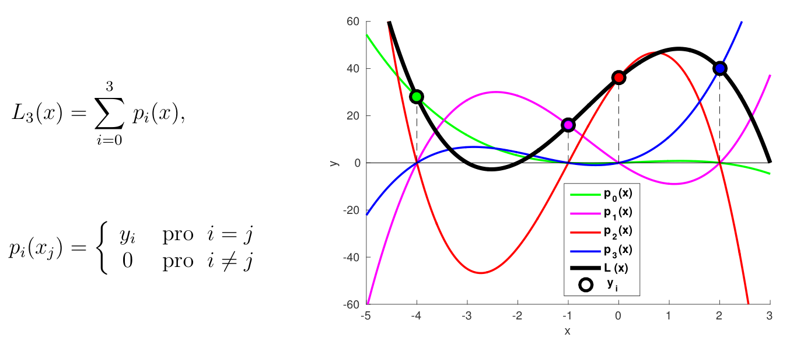

Interpolace a aproximace funkcí#
V této kapitole si představíme problém aproximace a interpolace funkcí. Touto kapitolou začíná část kurzu numeriky, zabývající se funkčními závislostmi a problémy z matematické analýzy.
Problém, nazvaný interpolace, vychází z následující situace. Uvažujme funkci \(f(x)\), pro kterou nemáme žádný analytický předpis, pouze známe hodnotu funkce na jisté množině bodů \(x_0, x_1, \dots, x_{N-1}\) (\(x_0 \lt x_1 \lt \dots \lt x_{N-1}\)). Tyto hodnoty můžou být získany například experimentálně nebo nějakým (náročným) výpočtem. Funkce \(f(x)\) pak může být potřeba k dalším výpočtům a typicky je nutné vyhodnocovat tuto funkci nejen v bodech \(x_i\), ale pro libovolné \(x\).
Cílem interpolace je získat odhad funkční závislosti funkce \(f(x)\) mezi body \(x_i\). Naopak extrapolace aproximuje funkci mimo interval \([x_0, x_{N-1}]\). Extrapolace je výrazně komplikovanější problém, proto se v této kapitole zaměříme pouze na interpolaci funkcí.
Aproximace funkcí jsou také užitečné pro další analýzu funkcí, jako například výpočet extrémů, derivací nebo integrálu.
Interpolace souvisí s aproximací funkcí, ale není to samé. U interpolace máme funkci zadanou v určitých bodech, které si nevybíráme. Neznáme analytický předpis a nemůžeme tedy funkci vyhodnotit v jiných bodech.
Naopak aproximace funkce spočívá ve zjednodušení a v urychlení vyhodnocení funkce \(f(x)\) v bodě \(x\). V takové situaci máme analytický předpis nebo dokážeme funkční hodnotu spočítat v libovolném bodě, ale výpočet chceme urychlit.
Důležitou součástí interpolačních metod, jako všude v numerice, je odhad chyby. Při interpolaci se vždy budeme dopouštět chyby metody, jelikož nedokážeme aproximovat funkce s libovolnou přesností na spojitém intervalu. Interpolační metody vždy předpokládají jistý stupeň hladkosti odhadované funkce. Nespojité a jiné nepěkné funkce jsou pro interpolaci kompilací a chyba zde bude poměrně vysoká.
Ukážeme si následující typy aproximačních metod:
Typy interpolačních metod
Lokální interpolace
Spliny (lokální/částečně nelokální)
Polynomiální interpolace (globální) - Lagrangeovy a Newtonovy polynomy
Další aproximační metody
Čebyševovy polynomy - “nejlepší stejnoměrná aproximace”
Fitování funkcí - metoda nejmenších čtverců
import numpy as np
from scipy import linalg, interpolate, special
import matplotlib.pyplot as plt
Lokální interpolace#
Interpolace je sestavena po částech, podintervalech, na kterých je funkce aproximována zvlášť, nezávisle na ostatních bodech. V každém podintervalu je použita jiná interpolační funkce.
Lineární interpolace#
Lineární interpolace je definována jako spojení úseček spojujících dvojici bodů z množiny bodů, ve kterých známe danou funkci. Uvažujme dvojici bodů \( (x_{i}, y_{i}) \) a \( (x_{i + 1}, y_{i + 1}) \), pak lokální lineární interpolace na intervalu \( (x_{i}, x_{i + 1}) \) je dána následujícím vztahem:
kde
je sklon úsečky.
Ukázka lineární interpolace na funkci \(\cos(x)\). V praxi často funkci neznáme analyticky, zde využíváme známou funkci pro lepší představu. Zde pouze vykreslíme funkci na několika málo bodech a tím získáme iluzi interpolace.
x = np.linspace(0, 5*np.pi, 1000) # presna funkce
xint = np.linspace(0, 5*np.pi, 15) # linearni interpolace
plt.plot(x, np.cos(x), 'r-', label='cos(x)')
plt.plot(xint, np.cos(xint), '.-', label='interpolace')
plt.legend();
Doplňte následující funkci linearni_interpolace(), která pro zadanou množinu dat x_p, y_p spočítá lineární interpolaci. Bude tedy možné vyhodnotit funkci, aproximovanou hodnotami x_p, y_p, v libovolném bodě x.
Uvažujte již setřízené hodnoty v poli x_p.
def linearni_interpolace(x_p, y_p, x):
## DOPLŇTE ##
# vykresleni
x = np.linspace(0, 5*np.pi, 1000)
xdata = np.linspace(0, 5*np.pi, 15)
ydata = np.cos(xint)
y = [linearni_interpolace(xdata, ydata, xi) for xi in x]
plt.scatter(xdata, ydata, c=['g'], label='data')
plt.plot(x, np.cos(x), 'r-', label='cos(x)')
plt.plot(x, y, '-', label='lin. interpolace')
plt.legend();
Lineární interpolace zajištuje knihovní funkce scipy.interpolate.interp1d().
Interpolační spline#
Oproti lineární interpolaci, interpolační spliny mají navíc spojitou první a vyšší derivace. Interpolace probíhá lokálně na podintervalech, na kterých je funkce aproximována polynomem. Na hranicích podintervalů, tedy ve známých bodech, jsou kladeny podmínky spojitosti a spojitosti derivací.
Pokud vyžadujeme spojitost derivací do 1. řádu, potřebujeme minimálně polynom se čtyřmi volnými parametry - kubický spline. Konstrukci si můžete zopakovat zde.
Vlastnosti:
Stabilnější oproti polynomiální aproximaci
Méně podléhají oscilacím mezi známými body (Rungeho jev)
Globální interpolace#
V globální interpolaci je ve všech podintervalech využita jedna stejná funkce.
Lagrangeova interpolace#
Lagrangeova interpolace využívá k aproximaci funkce sadu Lagrangeových polynomů. Pro \( n \) známých bodů \( (x_{i}, y_{i}) \), \( i = 0, 1, \dots, n-1 \), kde žádné dva \( x_i \) jsou stejné, Lagrangeova interpolace je polynom \( (n-1) \)-tého stupně, daný lineární kombinací:
bází Lagrangeových polynomů a kde
jsou tzv. pomocné funkce, pro které platí:
Výsledný Lagrangeův interpolační polynom je jednoznačný.

Doplňte následující funkci lagrangeova_interpolace(), která pro zadanou množinu dat x_p, y_p spočítá interpolaci pomocí Lagrangeových polynomů.
Využijte k implementaci struktury np.poly1d (speciální pole koeficientů polynomu, operace s polynomy), která výrazně zjednodušuje práci s polynomy. Funkce by měla vracet polynom v tomto tvaru.
Ukázka práce s np.poly1d:
p = np.poly1d([2, 1]) # 2x + 1
print(p + 5 * p) # (2x + 1) + 5*(2x + 1)
print(p**2) # (2x + 1)^2
print(p * np.poly1d([4,0])) # (2x + 1) * 4x
12 x + 6
2
4 x + 4 x + 1
2
8 x + 4 x
def lagrangeova_interpolace(x_p, y_p):
## DOPLŇTE ##
x_p = np.random.rand(5)
y_p = np.random.rand(5)
x = np.linspace(np.min(x_p), np.max(x_p), 100)
lag = lagrangeova_interpolace(x_p, y_p)
print(lag)
plt.scatter(x_p, y_p)
plt.plot(x, lag(x));
4 3 2
-23.33 x + 41.15 x - 22.35 x + 3.289 x + 0.763
Použití Lagrangeovy interpolace na funkci \(\cos(x)\).
x_p = np.linspace(0, 5*np.pi, 15)
y_p = np.cos(x_p)
x = np.linspace(np.min(x_p), np.max(x_p), 100)
lag = lagrangeova_interpolace(x_p, y_p)
print(lag)
plt.scatter(x_p, y_p, label='data')
plt.plot(x, lag(x), label='lagrange. interp.')
plt.plot(x, np.cos(x), 'r:', label='cos(x)')
plt.legend();
14 13 12 11
4.633e-25 x - 6.826e-11 x + 6.969e-09 x - 3.088e-07 x
10 9 8 7 6
+ 7.759e-06 x - 0.0001216 x + 0.001237 x - 0.008369 x + 0.03924 x
5 4 3 2
- 0.1377 x + 0.3583 x - 0.4653 x - 0.1119 x - 0.1367 x + 1
Správnost implementace můžeme ověřit pomocí odpovídající knihovní funkce scipy.interpolate.lagrange().
x_p = np.random.rand(10)
y_p = np.random.rand(10)
try:
np.testing.assert_array_almost_equal(lagrangeova_interpolace(x_p, y_p), interpolate.lagrange(x_p, y_p), decimal=6)
except AssertionError as E:
print(E)
else:
print("The implementation is correct.")
The implementation is correct.
Nevillův algoritmus#
Nevillův algoritmus je alternativní rekurzivní postup pro výpočet Lagrangeova interpolačního polynomu. Je dán následujícím vztahem:
Lagrangeoův interpolační polynom je pak \( L(x) = L_{0, n-1} \).
Výhodnou tohoto algoritmu je možnost postupného zpřesňování aproximace (“iterovaná interpolace”) přidáváním nových bodů. Také lze snadno odhadnout chybu aproximace rozdílem za sebou jdoucích interpolací řádu \(n\) a \(n-1\). Výpočet je oproti přímému postupu pomalejší, zato nepodléhá tak velké numerické chybě.
Rungeho jev#
Polynomiální interpolace je vhodná zejmána pro funkce, které se svým tvarem polynomu blíží. Naopak některé funkce nejde aproximovat polynomem přesně a dochází k silným oscilacím mezi známými ekvidistantními body (Rungeho jev).
Aproximujte Rungeho funkci
pomocí Lagrangeova interpolačního polynomu za použití \( 12 \) uniformě rozdělených bodů \( x_i \) na intervalu \( [-1, 1] \), spočítejte absolutní chybu aproximace a vykreslete výsledky.
## DOPLŇTE ##
def f(x):
return 1 / (1 + 25 * x**2)
N = 12
x_p = np.linspace(-1,1,N)
y_p = f(x_p)
lag = lagrangeova_interpolace(x_p, y_p)
x = np.linspace(-1,1,100)
y = f(x)
plt.figure(figsize=(12,5))
plt.subplot(1,2,1)
plt.plot(x, y, 'k', label='Rungeho fce')
plt.scatter(x_p, y_p, label='data')
plt.plot(x, lag(x), label='lagrange. interp.')
plt.legend()
plt.subplot(1,2,2)
plt.plot(x, np.abs(lag(x) - y), label='abs. chyba')
plt.legend();
Tato ukázka ukazuje, že interpolace polynomem vysokého stupně na ekvidistatních bodech může být pro určité funkce problematická.
Čebyševova interpolace#
Pro aproximaci funkce \(f(x)\) ideálně hledáme nejlepší stejnoměrnou aproximaci, tedy funkci \(h(x)\), která na daném intervalu \([a,b]\) minimalizuje hodnotu:
Polynom, který je nejlepší stejnoměrnou aproximací funkce na daném intervalu \([a,b]\) mezi polynomy daného stupně, se někdy nazývá polynom “minimax”. Takový polynom existuje za velmi obecných podmínek, ale není znám jednoduchý postup, jak ho zkonstruovat (Remezův algoritmus).
Čebyševovy polynomy
Aproximace Čebyševovými polynomy se lehce konstruuje a je téměr tak přesná, jako nejlepší stejnoměrná aproximace. Často se používá pro výpočet funkcí.
Oproti Lagrangeově interpolaci, Čebyševova interpolace využívá předem daných nerovnoměrně rozdělených bodů. Nelze ji tedy použít na interpolaci dat, u kterých si nemůžeme vybrat polohu \(x_i\).
Čebyševovy polynomy jsou definovány na intervalu \([-1, 1]\) následovně:
Pro výpočet polynomu je vhodné použít rekurentní vztah:
Čebyševův polynom \(T_n(x)\) má \(n\) kořenů v intervalu \([-1, 1]\) v bodech:
Aproximace pomocí Čebyševova polynomu
Kořenů polynomu \(T_n(x)\) lze použít jako kořeny Lagrangeova polynomu pro snížení vlivu Rungeho jevu. Kořeny jsou více nahromaděny k okrajím intervalu, což vede k potlační oscilací. Pro \(n > 8\) je však již výhodnější použít Čebyševova polynomu.
Čebyševova interpolace - přímá konstukce Čebyševova polynomu jako aproximace funkce
Čebyševova interpolace lze spočítat následovně:
kde
Hodnoty funkce \(f(x)\) jsou rovny hodnotám funkce \(T(x)\) ve všech \(N\) nulových bodech polynomu \(T_N(x)\).
Všimněte si, že oproti Lagrangeově polynomu je tvar Čebyševových polynomů obecný. Pro získání Čebyševovy interpolace je třeba vyhodnotit funkci \(f(x)\) v kořenech polynomu \(T_N(x)\).
Doplňte funkci cebysevuv_polynom(), která počítá koeficienty Čebyševova polynomu stupně \( n \) s využitím rekurentního vztahu.
Využijte k implementaci struktury np.poly1d (speciální pole koeficientů polynomu, operace s polynomy), která výrazně zjednodušuje práci s polynomy. Funkce by měla vracet polynom v tomto tvaru.
Vykreslete prvních 5 polynomů na intervalu \([-1, 1]\).
def cebysevuv_polynom(n):
## DOPLŇTE ##
x = np.linspace(-1.0, 1.0, 1000)
plt.figure(figsize=(8,5))
for i in range(5):
cp = cebysevuv_polynom(i)
plt.plot(x,cp(x), label=f'n={i}')
plt.title('Čebyševovy polynomy na [-1,1]')
plt.legend();
Správnost implementace můžeme ověřit pomocí odpovídající knihovní funkce scipy.special.eval_chebyt.
n = 10
x = np.linspace(-1.0, 1.0, 1000)
try:
np.testing.assert_array_almost_equal(cebysevuv_polynom(n)(x), special.eval_chebyt(n, x), decimal=7)
except AssertionError as E:
print(E)
else:
print("The implementation is correct.")
The implementation is correct.
Doplňte funkci cebysev_koreny(), která počítá kořeny Čebyševova polynomu stupně \( n \).
def cebysev_koreny(n):
## DOPLŇTE ##
N = 10
print(cebysev_koreny(N))
plt.scatter(cebysev_koreny(N), np.zeros(N))
plt.grid();
[-0.98768834 -0.89100652 -0.70710678 -0.4539905 -0.15643447 0.15643447
0.4539905 0.70710678 0.89100652 0.98768834]
Správnost implementace můžeme ověřit pomocí odpovídající knihovní funkce scipy.special.roots_chebyt.
n = 10
try:
np.testing.assert_array_almost_equal(cebysev_koreny(n), special.roots_chebyt(n)[0], decimal=7)
except AssertionError as E:
print(E)
else:
print("The implementation is correct.")
The implementation is correct.
Aproximujte Rungeho funkci
pomocí Lagrangeova interpolačního polynomu za použití \( 12 \) uniformě rozdělených bodů \( x_i \) na intervalu \( [-1, 1] \), spočítejte absolutní chybu aproximace a vykreslete výsledky.
na intervalu \([ -1, 1] \) pomocí Lagrangeova interpolačního polynomu za použití kořenů Čebyševova polynomu \( 12 \)-tého řádu. Spočítejte absolutní chybu aproximace a vykreslete výsledky.
## DOPLŇTE ##
def f(x):
return 1 / (1 + 25 * x**2)
N = 12
# Lagrange
x_p = np.linspace(-1,1,N)
y_p = f(x_p)
lag = lagrangeova_interpolace(x_p, y_p)
# Cebysev
x_p = cebysev_koreny(N)
y_p = f(x_p)
lagceb = lagrangeova_interpolace(x_p, y_p)
x = np.linspace(-1,1,100)
y = f(x)
plt.figure(figsize=(12,5))
plt.subplot(1,2,1)
plt.plot(x, y, 'k', label='Rungeho fce')
plt.scatter(x_p, y_p, label='data')
plt.plot(x, lag(x), label='lagrange interp.')
plt.plot(x, lagceb(x), label='lagrange-čebyšev. interp.')
plt.legend()
plt.subplot(1,2,2)
plt.plot(x, np.abs(lag(x) - y), label='abs. chyba lagrange')
plt.plot(x, np.abs(lagceb(x) - y), label='abs. chyba lagrange-čebyšev')
plt.legend();
Čebyševovy polynomy jsou definované pouze na intervalu \([-1, 1]\). Pokud chceme aproximovat funkci na obecn0m intervalu \( [a, b] \neq [-1, 1] \), tak je třeba provést odpovídající transformaci.
Při výpočtu kořenů \( x_i \) Čebyševovy interpolace lze použít:
kde \( z_i \) je \( i \)-tý kořen Čebyševova polynomu \( n \)-tého stupně.
Při interpolaci lze libovolný interval \([a, b]\) transformovat na \([-1, 1]\) pomocí:
Modelování dat#
V této podkapitole se budeme zabývat úlohou velmi podobnou interpolaci. U interpolace je cílem získat aproximaci funkce, kterou dokážeme vyčíslit na konečném počtu bodů, na reálném intervalu. Funkci dokážeme vyčíslit přesně až na chybu numerické metody a zaokrouhlovací chyby.
Naopak v případě modelování dat uvažujeme data podléhající experimentálním nebo dalším chybám - data obsahují jistou míru šumu. Tedy jednotlivé data pointy se mohou významně odchylovat od skutečné hodnoty/funkce. V takovém případě nemá smysl provádět interpolaci, u které typicky chceme, aby aproximace přesně procházela známými data-pointy. U modelování, nebo také fitování dat, chceme proložit data vhodným modelem - křivkou. Tento model typicky známe z teorie, tedy je například znám určitý zákon nebo vzorec, kterým by se data měla řídit.
Ukážeme si metodu nejmenších čtverců, která pro libovolný tvar modelu najde nejpravděpodobnéjší hodnoty parametrů modelu vzhledem k daným datům (viz Numerical Recipes kapitola 15).
Metoda nejmenších čtverců#
Pro daných \( n \) známých data pointů \( (x_{i}, y_{i}) \), \( i = 0, 1, \dots, n-1 \), metoda nejmenších čtverců hledá aproximaci k datům pomocí minimalizace součtu čtverců reziduí (odchylka dat od modelu):
kde \( f(x_i; \beta) \) je modelová funkce a \( \beta \) je vektor parametrů modelu o velikosti \( m \). K hledání minima \( S \) lze použít několik metod. \( S \) se v optimalizaci často nazývá účelová funkce nebo chyba.
Pokud je modelová funkce lineární ve všech parametrech \(\beta_i\), lze minimum spočítat přímo položením gradientu rovnu \( 0 \):
V opačném případě lze použít jiné minimalizační metody, jako například metodu největšího spádu (uvidíme v kapitole 8).
Polynomiální modelová funkce
V případě polynomiální modelové funkce:
lze položit \(\nabla S = 0\) a převést hledání minima \(S\) na řešení soustavy lineárních rovnic.
Vektor \( \beta \), který minimalizuje \( S \) lze tedy získat řešením systému \( m \) lineárních algebraických rovnic:
Systém rovnic lze dále upravit na:
a v maticové formě máme:
Implementujte metodu nejmenších čtverců s polynomiálním modelem pro obecný stupeň polynomu \(n\). Funkce polynom_nejmensi_ctverce() by měla vrátit koeficienty polynomu ve formátu np.poly1d.
def polynom_nejmensi_ctverce(x_p, y_p, m):
## DOPLŇTE ##
x_p = np.random.rand(10) - 0.5
y_p = x_p**2 + 0.08*np.random.rand(10)
x = np.linspace(min(x_p), max(x_p))
pfit = polynom_nejmensi_ctverce(x_p, y_p, 2)
plt.scatter(x_p, y_p)
plt.plot(x, pfit(x))
plt.show()
[[10. 1.6074033 1.03128341]
[ 1.6074033 1.03128341 0.30074111]
[ 1.03128341 0.30074111 0.15042872]]
x_p = np.random.rand(10)
y_p = np.random.rand(10)
n = 1
try:
np.testing.assert_array_almost_equal(polynom_nejmensi_ctverce(x_p, y_p, n), np.polyfit(x_p, y_p, n), decimal=7)
except AssertionError as E:
print(E)
else:
print("The implementation is correct.")
[[10. 3.44087536]
[ 3.44087536 2.00984499]]
The implementation is correct.
Použijte funkci polynom_nejmensi_ctverce() pro fitování následujících dat, které byly vygenerovány z polynomiální funkce s přidáním gaussovského šumu. Odhadněte z tvaru dat vhodný stupeň fitovaného polynomu. Vyzkoušejte fit pro různé stupně, spočítejte výslednou chybu \(S\) a porovnejte ji pro různé stupně polynomiálního fitu.
Vygenerování dat
N = 100
m = int(np.random.rand()*5) + 2
poly = np.poly1d((np.random.rand(m) - 0.5) * 8)
print(poly)
xdata = (np.random.rand(N) - 0.5) * 8
ydata = poly(xdata)
ydata += np.random.normal(0, 0.1*np.max(np.abs(ydata)), size=(N))
plt.scatter(xdata, ydata)
xdataSort = np.sort(xdata)
plt.show()
4 3 2
-1.035 x - 1.313 x - 1.81 x + 0.7911 x + 0.6889
Polynomiální fit
## DOPLŇTE ##
error = 502.58708108497